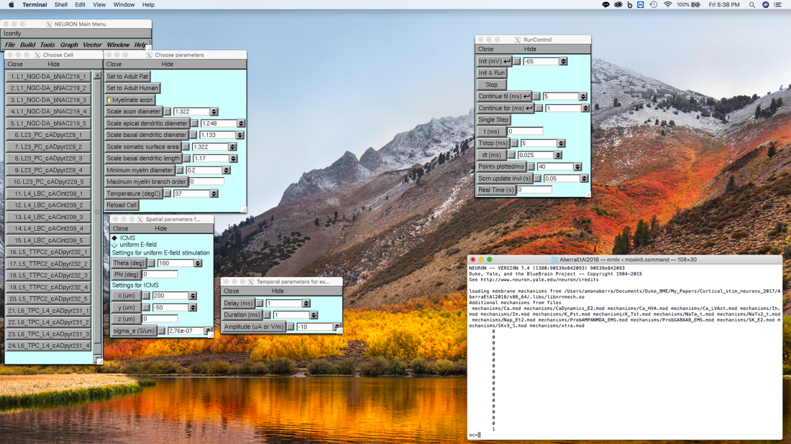
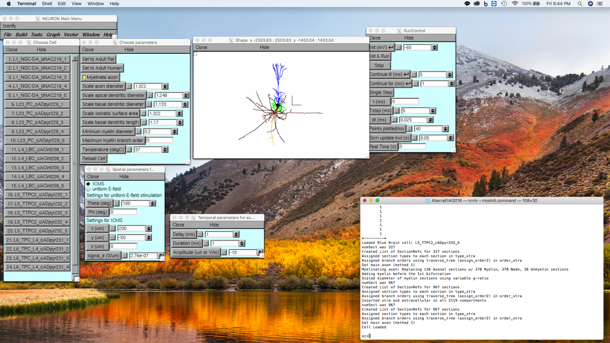
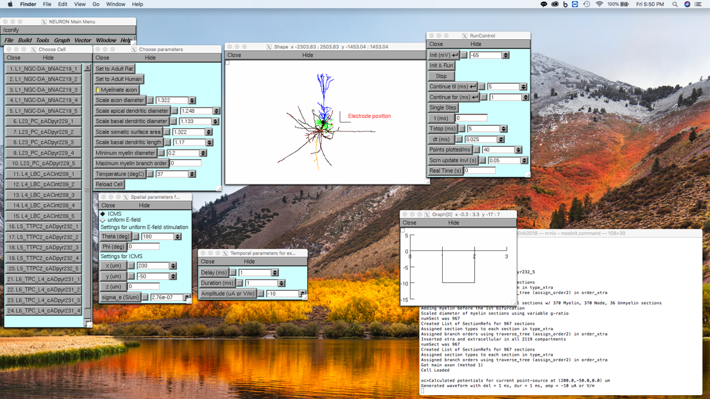
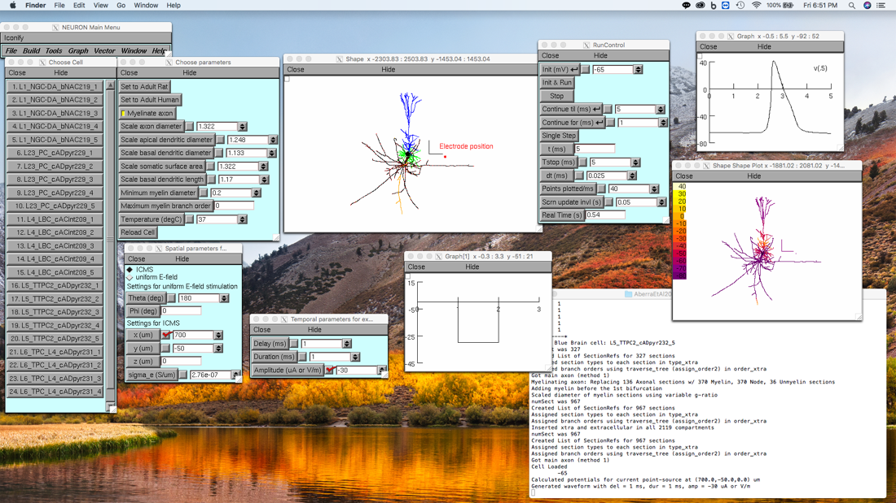
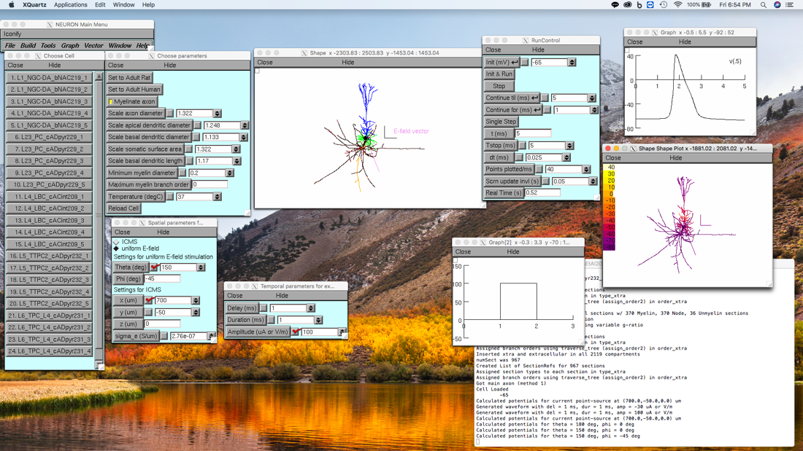

This archive instantiates the single-cell cortical models used in (Aberra et al. 2018) and sets up extracellular stimulation with either a point-current source, to simulate intracortical microstimulation (ICMS), or a uniform E-field distribution, with a monophasic, rectangular pulse waveform in both cases.
Model code used in:
Aberra AS, Peterchev, AV, Grill WM (2018) Biophysically Realistic Neuron Models for Simulation of Cortical Stimulation J Neural Eng. https://doi.org/10.1088/1741-2552/aadbb1
This code was contributed by Aman Aberra (Duke University)
ABSTRACT
Objective. We implemented computational models of human and rat cortical neurons for simulating the neural response to cortical stimulation with electromagnetic fields. Approach. We adapted model neurons from the library of Blue Brain models to reflect biophysical and geometric properties of both adult rat and human cortical neurons and coupled the model neurons to exogenous electric fields (E-fields). The models included 3D reconstructed axonal and dendritic arbors, experimentally-validated electrophysiological behaviors, and multiple, morphological variants within cell-types. Using these models, we characterized the single-cell responses to intracortical microstimulation (ICMS) and uniform E-field with dc as well as pulsed currents. Main results. The strength–duration and current–distance characteristics of the model neurons to ICMS agreed with published experimental results, as did the subthreshold polarization of cell bodies and axon terminals by uniform dc E-fields. For all forms of stimulation, the lowest threshold elements were terminals of the axon collaterals, and the dependence of threshold and polarization on spatial and temporal stimulation parameters was strongly affected by morphological features of the axonal arbor, including myelination, diameter, and branching. Significance. These results provide key insights into the mechanisms of cortical stimulation. The presented models can be used to study various cortical stimulation modalities while incorporating detailed spatial and temporal features of the applied E-field.
Instructions to run the code (assuming NEURON has been installed):
**Linux/macOS (in terminal):
unzip the archive
cd AberraEtAl2018
chmod +x mosinit.command (automatically compiles mod files in 'mechanisms/' if necessary)
Double-click mosinit.command (or launch from terminal, e.g. ./mosinit.command)
**Windows:
unzip the archive
compile ‘mechanisms/‘ using mknrndll and copy nrnmech.dll from 'mechanisms/' up one level to 'AberraEtAl2018/'
right-click mosinit.ps1 and select “Run with Powershell”, will probably require giving permission to run
**To make short-cut executable with double-click:
right-click mosinit.ps1 and select “Create shortcut”
right-click newly created shortcut (ends with Shortcut.lnk by default) and select “Properties”
in the “Target:” field, add the text below before the existing text, which should look like this:
powershell.exe -ExececutionPolicy Bypass -File C:\path\to\file…
**instructions for creating executable powershell shortcut can be found here: https://www.tenforums.com/tutorials/97162-powershell-scripting-run-script-shortcut.html**
Additional notes:
1) After loading a model neuron, code currently only allows reloading same model (with same or different parameters), attempting to load a different model neuron will throw an error
2) Stack size must be increased to generate myelinated axons for most models, so init.hoc should be launched with options included in mosinit.command:
nrngui -NSTACK 100000 -NFRAME 20000 init.hoc
Using either shortcut launches init.hoc with these settings by default, otherwise the above text should be executed from the terminal/shell
3) Loading cell runs color_plotmax() with default settings, to replot with main axon colored (more well-defined for the pyramidal cells), type:
oc> color_plotmax(2,0)
Set second argument to 1 to save figure as .eps
4) To add new cells from Blue Brain Library:
Download cell model folder from: https://bbp.epfl.ch/nmc-portal/downloads
Unzip and place directory in “AberraEtAl2018/cells”
comment out “replace_axon()” in template.hoc within proc biophys() (typically line 117)
Add directory name to list of cell names below last entry in cell_chooser.hoc (currently, L6_TPC_L4_cADpyr231_5)
5) After loading, users can apply extracellular stimulation for a given field using the GUI windows, screenshots with further instructions (run on macOS) shown below
References for Blue Brain models:
1. Markram H†, Muller E†, Ramaswamy S†, Reimann MW†, Abdellah M, Sanchez CA, Ailamaki A, Alonso-Nanclares L, Antille N, Arsever S et al. (2015). Reconstruction and Simulation of Neocortical Microcircuitry. Cell 163:2, 456 - 492. doi: 10.1016/j.cell.2015.09.029
† Co-first author
2. Ramaswamy S, Courcol J-D, Abdellah M, Adaszewski SR, Antille N, Arsever S, Atenekeng G, Bilgili A, Brukau Y, Chalimourda A, Chindemi G, Delalondre F, Dumusc R, Eilemann S, Gevaert ME, Gleeson P, Graham JW, Hernando JB, Kanari L, Katkov Y, Keller D, King JG, Ranjan R, Reimann MW, Rössert C, Shi Y, Shillcock JC, Telefont M, Van Geit W, Villafranca Diaz J, Walker R, Wang Y, Zaninetta SM, DeFelipe J, Hill SL, Muller J, Segev I, Schürmann F, Muller EB and Markram H (2015). The neocortical microcircuit collaboration portal: a resource for rat somatosensory cortex. Front. Neural Circuits 9:44. doi: 10.3389/fncir.2015.00044
If mod files are successfully compiled and loaded, launching mosinit.command should produce the following output:

Selecting, for example, cell 20: L5_TTPC2_cADpyr232_5 in the “Choose Cell” window loads the cell and generates a Shape plot with the Myelin, Node, and Unmyelinated axonal sections as well as the apical and basal dendrites all colored differently. Color legend can be found in Fig. 1 or Fig. 7a of (Aberra et al. 2018).

Next, to simulate ICMS or uniform E-field stimulation, click on any of the parameter buttons, or enter a value in a parameter text box, and hit “Enter” on the keyboard in both the “Spatial parameters” and “Temporal parameters” windows. Once both sets of parameters are initialized, indicated by messages confirming the potentials and waveform have been set in the terminal, the simulation can be run using the “RunControl” window. Note the red marker indicating the location of the electrode tip, i.e. the point-source, used for calculating potentials.

For uniform E-field stimulation, a violet “dummy section” indicates the E-field direction defined by the polar and azimuthal angles, theta and phi, respectively, with the E-field pointing away from the cell body. Note: when using uniform E-field stimulation theta and phi are calculated by treating the y-axis (upwards, in the page) in the NEURON coordinate system as the z-axis, and by treating the NEURON z-axis (positive, out of the page) as the negative y-axis (positive, into the page). This is in contrast to the coordinates used for the ICMS electrode position, which use the NEURON coordinate system, i.e. z-axis is positive pointing out of the page.
To visualize the membrane potential response, a “Voltage axis” or “Shape plot” can be generated from the “Graph” menu In the “NEURON Main Menu” window (top left). Examples:
ICMS

Uniform E-field stimulation
